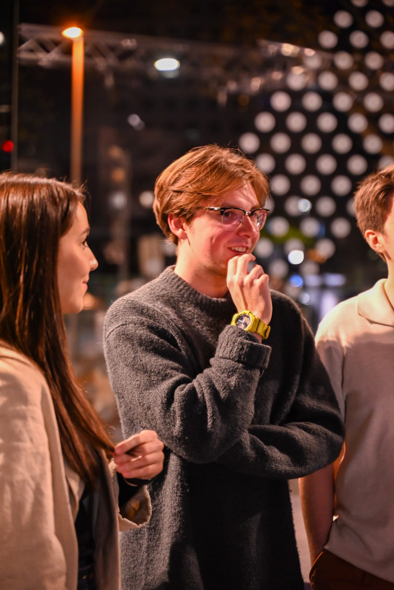
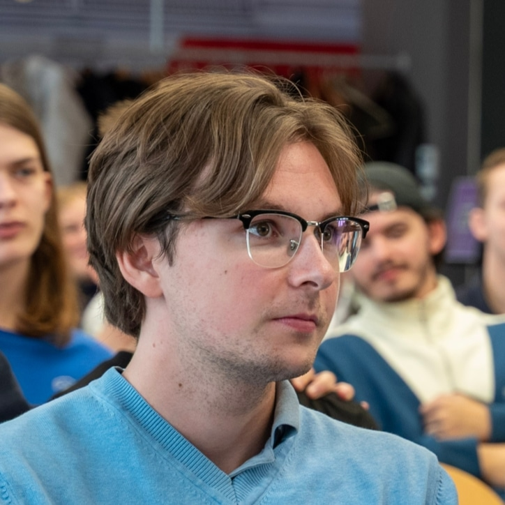
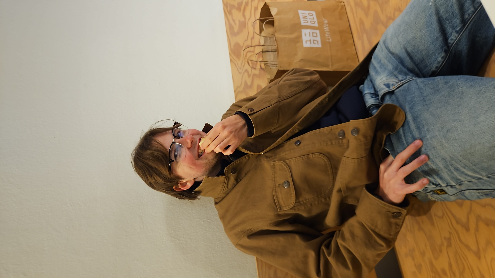

About me
I would put myself more on the side of the people who would rather not talk about themselves. Nothing extraordinary, this is for myself.
I love music, technology and all living things. I would love to combine it someway but I have yet to find a way. It might be Human centered technology, so that's what I am trying to get into lately. However I am fascinated by many other things as well.
Worlds
I am fascinated by worlds. I like to live in my own and once in a while I d like to share it. Actually sharing a world is what makes me happiest. When I was younger it used to be books and video games. They were nice in solitude but sharing one was the real joy. This still applies today. My worlds nowadays are mostly music and START Vienna. I loved joining worlds, now I d strive to make worlds where others feel included too.
Technology
I hate tech without meaning. And in our digital world called internet and also the real world we are drowning in meaninglessness. Technology should touch people. It should be helpful without any ill intent. I like minimalistic technology, like wearables, a simple mp3 player, a camera or recorder. Something that is useful to human beings, in a way, that makes the real world more enjoyable. Using tech should feel human, just as much as playing an instrument, reading a book or going for a walk in nature does.
Pictures


